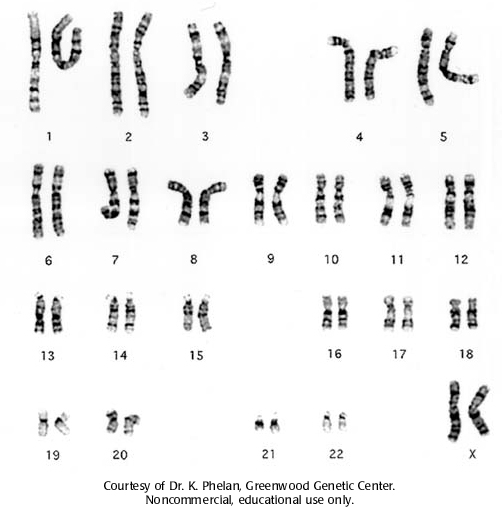
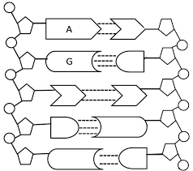
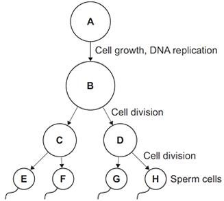
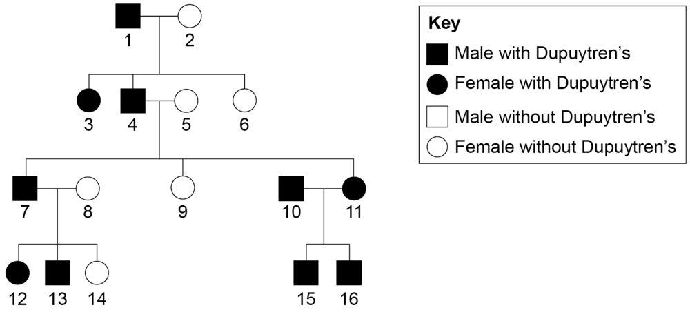
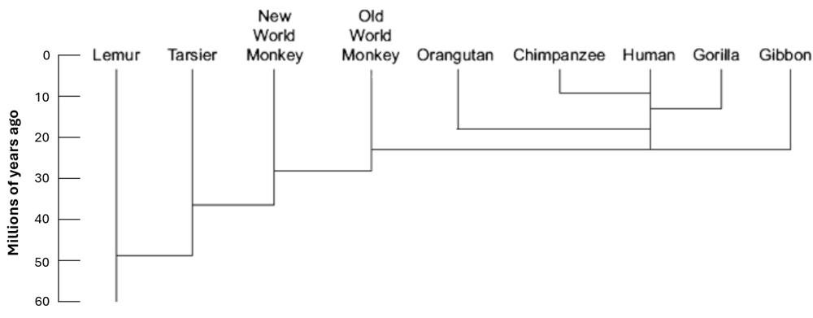

Section A: Multiple choice
In tobacco plants, if the diploid number of chromosomes is 48, how many chromosomes will be found in a pollen grain? A pollen grain is one of the gametes of the tobacco plant.
Gametes are haploid, so they carry half the diploid number: 48 ÷ 2 = 24.

Referring to the human karyotype shown, what sex would you expect the person to be?
The 23rd pair is two X chromosomes (XX), so the person is female.
Most DNA is contained in which part of a human body cell?
Which one of the following statements about mutations is not correct?
Many mutations are neutral, and some are beneficial.
Some alleles for traits of peas studied by Gregor Mendel include: L = long, l = short; W = wrinkled, w = smooth; Y = yellow, y = white; R = ribbed, r = grooved. Which of the following is the genotype for a short, wrinkled, yellow, grooved pea?
Haemophilia is an X-linked recessive trait in humans. A father and son are both haemophiliacs, but the mother is normal. The mother's genotype must be:
A son gets his X chromosome from his mother, so the mother must carry Xh. She is normal, so she is a carrier: XHXh.
An extra finger in humans is rare but may occur due to a dominant gene. When one parent is normal and the other parent has an extra finger but is heterozygous for the trait, what is the probability that the first child will be normal?
Ee × ee gives 1/2 Ee (extra finger) and 1/2 ee (normal).
Over the years there has been an increase in the number of strains of Staphylococcus aureus bacteria which are resistant to penicillin. The increase in the frequency of resistance has developed due to natural selection. This means that
Natural selection acts on variation that already exists and is inherited. Penicillin does not cause the resistance; it selects for bacteria that already have it.
Why are advantageous traits more likely to be passed on to offspring?
The wing of the bat and the forelimb of the dog are said to be homologous structures. This indicates that:
Section B: Short answer
Question 1
The following diagram represents part of a DNA molecule.

On paper (or in words below), show where you would circle and label: (i) a single nucleotide; (ii) the sugar-phosphate backbone in one strand.
Nucleotide (1 mark): circle one phosphate (small circle), the sugar attached to it (pentagon) and its base (shape in the middle) together.
Sugar-phosphate backbone (1 mark): circle the whole vertical chain of alternating sugars and phosphates down one side of the molecule.
There is one mistake in the diagram. Identify the part of the diagram with the problem and explain why it is a mistake.
Two identical bases are paired up in the middle of the molecule (1 mark). Bases in different strands normally pair up according to the complementary base pairing rule, A with T and G with C (1 mark).
Question 2
The diagram below represents the process by which human sperm cells are produced.

Describe the process represented. In your description, make sure you name the process and outline its purpose.
The diagram represents meiosis (1 mark), a form of cell division that occurs in the body to produce sex cells or gametes (1 mark).
Not every cell in the diagram contains the same amount of DNA. Cell A contains about 6 picograms of DNA (1 picogram = 10-12 grams). How much DNA would you expect in the following cells?
Cell B: picograms
Cell C: picograms
Cell E: picograms
B has replicated its DNA (6 × 2 = 12). The first division halves it (C = 6) and the second division halves it again (E = 3).
Question 3
One form of muscular dystrophy is caused by a recessive gene on the X chromosome.
Fill in the following table.
| Genotype | Description | Zygosity |
|---|---|---|
| XDXD | Homozygous | |
| Female carrier | Heterozygous | |
| Female with muscular dystrophy | ||
| Unaffected male | ||
| XdY |
Males have only one X chromosome, so they are hemizygous for X-linked genes.
A female carrier marries a man who does not have muscular dystrophy. What is the percentage probability that she will give birth to a son who has muscular dystrophy? Work it out with a Punnett square, then enter the percentage.
XDXd × XDY gives XDXD, XDXd, XDY and XdY, each with a 1 in 4 chance. Only XdY is a son with muscular dystrophy: 25%. (1 mark for working such as a Punnett square, 1 mark for the answer.)
Question 4
Complete the passage below, which describes natural selection. Use one word per blank.
Individual organisms of a species may show a wide range of due to differences in their genes. Individuals with characteristics most suited to the are more likely to and breed successfully. The genes that have helped these individuals to survive are then passed on to the next .
0.5 marks per term. "Variation" is not accepted for the first blank.
Question 5
A wild population contains red-eyed and white-eyed mice. A scientist tried to determine if one allele is dominant to the other. She conducted a series of crosses. The results of her work are shown below.
| Trial | Male parent | Female parent | % offspring red-eyed | % offspring white-eyed |
|---|---|---|---|---|
| 1 | White-eyed | White-eyed | 0 | 100 |
| 2 | Red-eyed | Red-eyed | 100 | 0 |
| 3 | Red-eyed | Red-eyed | 78 | 22 |
Based on this data, which trait is dominant and which is recessive?
White eyes:
Red eyes:
Justify your answer using evidence from the data above. Explain how the evidence proves your point.
In trial 3, two red-eyed parents produce offspring with white eyes. This means red eyes must be dominant and white eyes recessive, with both parents in trial 3 being carriers (heterozygous).
A Year 10 science student comments that the male and female parents in trial 2 must have the same genotype. Is he correct? Justify your answer with a clear explanation.
No, he is not correct (1 mark). If one parent is heterozygous and the other is homozygous for red eyes, they will still have only red-eyed offspring (1 mark).
Question 6
Dupuytren's contracture is an abnormal thickening of the skin in the palm of the hand. The diagram shows the inheritance of the condition in one family.

Based only on the diagram above, is it possible to confirm that the condition is dominant or recessive? Explain.
No (1 mark). There are no patterns that confirm the trait is either dominant or recessive (1 mark), such as two affected parents having an unaffected child, or two unaffected parents having an affected child.
The condition cannot be X-linked dominant. Why not?
Affected males have unaffected daughters (e.g. individual 1 and daughter 6), which is not possible with an X-linked dominant condition, because a father passes his X chromosome to all his daughters.
OR: unaffected mothers have affected sons (e.g. individual 8 and son 13), which is not possible with an X-linked dominant condition.
If the condition is autosomal dominant, use the allele symbols D and d to give all possible genotypes of the following individuals.
Individual 1:
Individual 5:
Individual 10:
Individual 1 is affected but has an unaffected daughter (6), so he must carry d: Dd. Individual 5 is unaffected, so she is dd. Individual 10 is affected, and nothing in the diagram rules out either genotype: DD or Dd.
Question 7
The diagram below represents the evolution of a group of organisms called primates.

The points where lines branch away from each other represent common ancestors in this evolutionary diagram. What is a common ancestor?
A species from which two or more species have descended (evolved).
DNA sequences can be a useful form of evidence for evolutionary relationships. Explain how DNA provides evidence for evolution.
Some species have the same genes, which suggests they came from a common ancestor that also had those genes. OR: DNA is more similar in species that are thought to be related through other evidence, such as fossils or anatomy.
It is not enough to say that DNA is similar or the same in related species: you need to say that the similarities match other evidence or suggest a common ancestor.
According to the diagram, humans and chimpanzees are the most closely related species. Explain how the diagram shows this.
Humans and chimpanzees share the most recent common ancestor (their lines branch apart closest to the present).